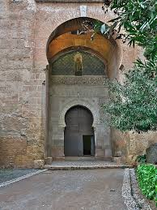
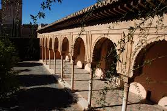
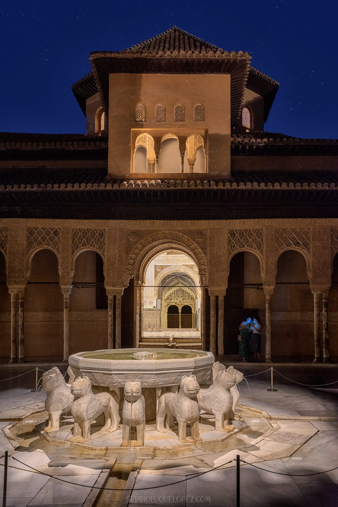
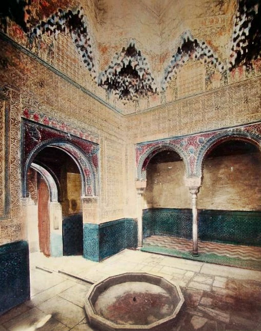

Leyenda de La Puerta de la Justicia
Siempre se ha dicho que la resistencia de la Alhambra es fruto de un sistema de construcción meticuloso y siguiendo patrones arquitectónicos avanzados de épocas pasadas. Sin embargo, aunque la historia de la edificación del monumento está basada en hechos reales, La Alhambra también está repleta de leyendas o historias por descubrir como la de la Puerta de la Justicia. Y es que se cuenta que tal era la belleza y magnificencia de esta entrada que estaba diseñada para que ningún caballero en caballo pudiera tocar con su lanza la punta de la mano esculpida en el arco. Además, se dice que quien lo consiguiera tenía garantizada la conquista del trono de La Alhambra.

La Leyenda de El Soldado Encantado
La tradición estudiantil de Granada también cuenta con sus leyendas propias. De hecho, una de las más populares es la del soldado de otra época que se le apareció a un estudiante de Salamanca. Según cuenta la historia, el joven estudiante tuvo que ayudar al soldado a romper un hechizo que le obligaba a custodiar eternamente el tesoro del rey Boabdil. Sin embargo, tras algunos contratiempos el hechizo no se pudo romper por lo que muchas son las personas que cuentan que a día de hoy el soldado encantado sigue vagando por Granada.

Leyenda del Patio de los Leones
Uno de los patios más emblemáticos de la Alhambra es sin duda el Patio de los Leones. Cuenta la leyenda que hace mucho tiempo una princesa árabe llamada Zaira, viajó Al-ándalus y se alojó en el palacio durante una temporada quedando enamorada de la belleza de este.
El padre de la princesa era un sultán despiadado que la mantenía siempre aislada y su madre murió cuando ella aún era pequeña, conservando la princesa un talismán, regalo de su madre.
La joven princesa se enamoró de un joven y se veían todas las noches a escondidas de la gente para no ser pillados, pero un día los sorprendieron encontrándose con un monarca, quien condenó matar al joven. La princesa entró a la habitación del rey a suplicar clemencia, pero en vez de encontrar a su padre, encontró el diario del rey.
El diario desvelaba que había asesinado al rey y la reina, verdaderos padres de la princesa Zaira, con ayuda de sus once hombres.
«Ya he matado al rey y a la reina. De la princesa Zaira me he apiadado. Gracias a mis 11 hombres, he conseguido ocupar el trono. Ahora creerá que yo soy su padre. Espero que la princesa no se entere nunca del maleficio de su talismán.»
Una noche, la princesa enfurecida reunió en el patio al rey y a sus hombres, y el talismán que ella portaba en su cuello los convirtió en doce leones de piedras.

Leyenda de La sala de los Abencerrajes
Se cuenta que una noble familia de la época, los Abencerrajes, eran enemigos de otra familia conocida como los Zenetes, quienes se inventaron una historia para que el sultán terminara decapitando a los 37 caballeros que llevaban el nombre de Abencerrajes. Se cuenta que el color rojizo de la fuente y del canal que lleva su agua hasta el Patio de los Leones se debe a la sangre de aquellos caballeros asesinados.
